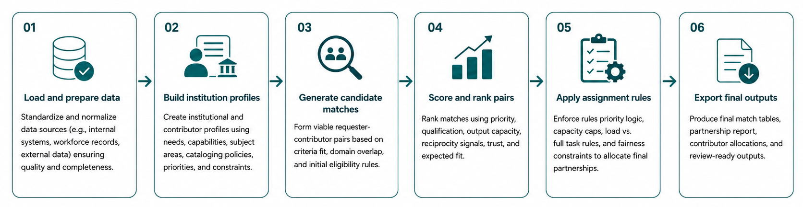

Institutions need support
Requests may differ by priority, type of work, required qualification level, and urgency.
Algorithm Design Project
This project models a common coordination problem: organizations need support, organizations can contribute support, and the system must decide who should help whom under priority, qualification, trust, reciprocity, and capacity constraints.
Many institutional networks face the same coordination problem: some participants need support, some can provide support, and many do both. The challenge is not simply finding a contributor. The system must identify useful matches while respecting priorities, skill requirements, trust indicators, reciprocity rules, and capacity limits.
This project turns that coordination problem into a structured matching workflow. Each requester’s needs are compared against contributor capabilities, scored based on fit, filtered through reciprocity rules, and assigned under institutional capacity caps.
Requests may differ by priority, type of work, required qualification level, and urgency.
Contributors have different capabilities, trust signals, skill levels, and available capacity.
Matching must avoid overloading high-capability contributors while preserving reciprocal participation.
The library cataloging exchange is the applied use case. The broader project is an algorithmic framework for reciprocal, capacity-constrained resource coordination.
A simple one-to-one match is not enough because each institution can appear on both sides of the exchange. A strong contributor for one request may also need support from another institution, so the system has to reason across a constrained exchange network rather than selecting isolated pairs of records.
Institutions can be requesters, contributors, or both, which makes the assignment problem closer to a constrained exchange network than a simple lookup table.
Contributors must be evaluated against required levels of work. The algorithm distinguishes exact fits, acceptable fallback options, and invalid matches instead of treating all candidates equally.
High-capability contributors should not absorb every assignment. Capacity caps help distribute work more fairly and prevent the strongest institutions from being overloaded.
The algorithm prioritizes balanced exchange behavior so participants contribute to others while also receiving support for their own needs.
The framework models requester needs and contributor capabilities across a reciprocal resource-sharing network, then ranks viable matches using priority, qualification fit, surplus capability, reciprocity, and capacity constraints. In the current cataloging exchange implementation, the pipeline supports reviewable assignment recommendations across 194 cataloging tasks and 19 participating institutions and entities.
| Component | Purpose |
|---|---|
| Request priority | Gives higher weight to requester needs with greater support urgency or backlog importance. |
| Need-capability fit | Rewards contributors whose available capabilities align with the requester’s priority need type, domain area, service category, or required support profile. |
| Qualification fit | Checks whether the contributor meets the requester’s minimum accepted support level. |
| Skill surplus | Adds value when a contributor exceeds the requested qualification level, creating stronger assignment confidence. |
| Contributor capacity | Accounts for whether a contributor has enough available support capacity before assigning additional exchange work. |
| Reciprocity balance | Reduces one-sided exchange behavior by encouraging fairer requester-contributor balance across institutions. |
| Trust and quality indicators | Adds signal for recognized cooperative, reliability, or quality-assurance markers that strengthen match confidence. |
| Final assignment readiness | Combines the scoring signals into a ranked recommendation that supports transparent match selection. |
The project is organized as a reproducible Python workflow that moves from anonymized sample survey data to scored match pools, reciprocal eligibility checks, final assignment outputs, and summary checkpoint metrics.

The current implementation is demonstrated through a cooperative cataloging exchange use case for the Center for Research Libraries. Participating institutions may request cataloging support for specific material-language combinations while also contributing cataloging capabilities to others.
In this setting, the algorithm helps identify balanced exchanges where institutions receive help for their own backlogs while contributing cataloging work back into the network.
The cataloging use case is valuable because it captures a general systems problem: expertise is available somewhere in the network, but it is unevenly distributed and difficult to coordinate manually.
The public version of the project uses anonymized sample data that preserves the original workflow structure while removing private institution and contact details. The pipeline can be rerun to reproduce checkpoint outputs.
The reproducible sample version lets reviewers inspect the algorithmic workflow without exposing private institutional data from the original project.
I developed the cataloging exchange workflow as an applied algorithm and data engineering project, transforming a multi-institutional backlog coordination problem into a reproducible Python-based matching pipeline. The system models requester needs, contributor capacity, qualification fit, exchange balance, and assignment behavior to support fairer and more transparent cataloging exchange decisions.
Structured survey responses into normalized requester and contributor profiles, cleaned inconsistent fields, anonymized sensitive institution-level inputs, and prepared the data model needed to compare demand, available support, qualifications, and exchange constraints across participating institutions.
Designed the scoring framework used to evaluate potential exchanges across priority, qualification fit, surplus capability, trust indicators, and final assignment behavior. The workflow converts institutional profile data into ranked match recommendations rather than simple one-off pairings.
Added rules to prevent high-capacity contributors from being overloaded, support balanced exchange behavior, and account for contributor availability when assigning cataloging support. These constraints made the matching process more realistic, explainable, and operationally useful.
Refactored the workflow into reusable Python modules, a clean demonstration notebook, runnable pipeline scripts, anonymized sample data handling, output exports, and validation checks. The final structure supports repeatable analysis, transparent review, and portfolio-safe demonstration of the matching system.
Although the working implementation is demonstrated through cooperative cataloging exchange, the matching structure can transfer to other reciprocal coordination problems where organizations exchange support under capacity constraints.
Refactored project structure with anonymized sample data, scripts, source modules, notebook, and test workflow.
Open repositoryProject presentation artifact for the cooperative cataloging exchange algorithm.
Open slidesPublic feature describing the AI and cataloging challenge context behind the project.
Read feature